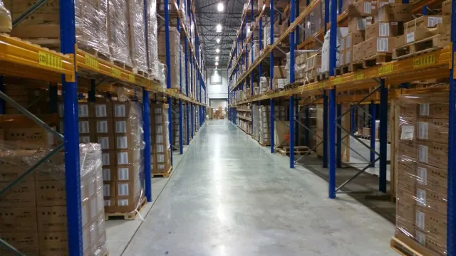

Custom business software & SaaS
Build the application your workflow actually needs: portals, permissions, approvals, billing, reporting, dashboards, and customer-facing services.
Systems - Portals - WorkflowsNairobi, Kenya - Founder & Technical Lead at Statum
I help organisations build custom business systems, integrate payments, AI-enabled workflows, and third-party services, modernise existing platforms, and improve production reliability. I am Bob Mwenda, Founder and Technical Lead at Statum.
Built across the lifecycle
From an unclear workflow to a system people can use, support, and grow.
01 / About Bob
I am a Nairobi-based software engineer and Founder and Technical Lead at Statum, where I help organisations turn important business processes into dependable software.
I work across the full software lifecycle: understanding a business workflow, shaping the architecture, defining scope, building services and APIs, integrating external systems, deploying safely, and making production behaviour visible.
Through Statum, I lead delivery of custom business systems, customer portals, SaaS products, payment and AI integrations, cloud solutions, and operational tools. I work with stakeholders to move from an unclear requirement to a system that teams can use and support.
My experience includes legacy ESB migration to Java microservices, API gateway modernization, load-balancer migration, financial integration automation, centralized observability, and operational runbook development.
I am comfortable moving between Java and Spring Boot, PHP and Laravel, Python and Shell, REST and SOAP, message brokers, API gateways, Docker and Kubernetes, relational databases, and observability tools.
The common thread is practical engineering: clear boundaries, maintainable code, secure integration, useful telemetry, and systems that teams can operate after release.
Background: BSc in Mathematics and Computer Science, Multimedia University of Kenya.
02 / Services
Choose the problem you need to solve. I can help shape the scope, deliver the system, and make the result supportable after launch.
Build the application your workflow actually needs: portals, permissions, approvals, billing, reporting, dashboards, and customer-facing services.
Systems - Portals - WorkflowsConnect business systems to payment providers, AI services, messaging platforms, ERPs, CRMs, and third-party APIs with secure workflows, retries, reconciliation, and useful failure handling.
Payments - AI - APIsAssess existing systems, clarify a migration path, and introduce maintainable services and API layers without losing sight of the business process.
Java - Spring Boot - LaravelImprove the path from code to production with CI/CD, secure delivery, observability, alerts, health checks, runbooks, and operational readiness.
CI/CD - Security - SRETurn a business need into a clear technical scope, architecture decisions, delivery plan, stakeholder rhythm, and a responsible handover.
Discovery - Scope - HandoverHow an engagement starts
You do not need a finished brief. Start with the problem, the people involved, the systems already in place, and the decision you need to make next.
Understand the workflow, the people involved, the existing systems, and what is difficult today.
Agree the priorities, constraints, architecture direction, and the next delivery checkpoint.
Deliver with clear decisions, documentation, operational checks, and support arrangements.
03 / Experience
I combine hands-on engineering with client discovery, architecture decisions, delivery coordination, and production ownership.
Safaricom PLC
Statum
Maryland Global Initiatives Corporation
Custometrix Ltd
Dibon Consulting
Igwange Building Contractors Ltd
04 / Selected work
Representative public examples from the Statum product portfolio, including completed anonymised case studies. The images show real-world context, not screenshots of private client software.
Payment initiation, Daraja callbacks, C2B validation, status handling, and reconciliation workflows for business systems.
Middleware for data mapping, authentication, retries, queues, error handling, logs, and connections across business systems and third-party APIs.
Provider routing, OTP messages, campaign delivery reports, and webhook handling for transactional and operational communication.

Modular records, billing, approvals, reporting, roles, and permissions designed around the way an organisation operates.
05 / Toolkit
Familiar tools, chosen according to the product, existing environment, team, data, and operational needs.
Java, Spring Boot, PHP, Laravel, Python, Shell, Maven
JavaScript, Vue.js, HTML, CSS, responsive interfaces, customer portals
REST, SOAP, Apache Camel, Kafka, RabbitMQ, Redis, Apigee, APISIX
Docker, Kubernetes, OpenShift, AWS, Jenkins, CI/CD, NGINX
ELK, Prometheus, Grafana, Splunk, structured logging, health checks
Keycloak, OAuth2, TLS/SSL, input validation, permissions, traceability
Oracle, PostgreSQL, MySQL, query tuning, capacity planning
06 / Principles
Design for resilience, security, and measurable operational impact from the start.
Use useful telemetry, health checks, history, and runbooks to make system behavior understandable.
Prefer maintainable solutions and pragmatic architecture over complexity that the team cannot operate.
07 / Connect
Tell Statum what you are trying to improve, build, or connect. You do not need a finished brief to start; a short description of the problem and the next decision is enough.